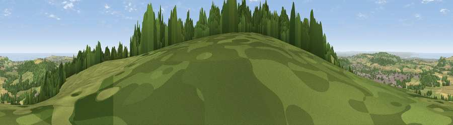

Viewpoint near Charltons
#800 in England · top 4% of its area beats it · near Charltons · footpathWhere it is
The exact computed spot (NZ 62988 14500). Click the marker for map links.
Public access: a public right of way passes within 15 m of this spot. Computed from Natural England's CRoW access layer and OpenStreetMap rights of way — not the legal definitive map. Always verify locally.
The view, rendered

A 360° render of this exact spot computed from the terrain model, tree cover and land cover — summer colours, afternoon light, calibrated against photographs of famous viewpoints. Real trees, hedges and buildings will differ in detail.
The panorama
Grey silhouette: terrain skyline in each direction (720 bearings, Earth curvature and refraction included). Dashed green: skyline with trees (+15 m) and buildings (+8 m) as obstacles. Blue strip: how far the ground is visible on each bearing.
Where the view opens
Wedge length = distance to the farthest visible ground on that bearing (vegetation-aware). Rings at 10, 25 and 50 km.
What fills the view
49% woodland · 24% grassland · 19% cropland · 5% built-up · 3% water
Angular shares of the visible panorama (visual magnitude), not map area. Landscape diversity 0.55 (0–1 Shannon).
Key numbers
More beautiful places nearby
The staircase of upgrades: each row has a higher view potential than everything closer. Driving times are estimates from straight-line distance, calibrated against real road routing — check an actual route before setting out.
| Place | Direction | Drive | Score |
|---|---|---|---|
| Viewpoint near Hutton Village | WSW · 1 km | ~4 min | 81.0 |
| Viewpoint near Hutton Village | WSW · 2 km | ~5 min | 84.2 |
| Roseberry Topping | WSW · 5 km | ~12 min | 85.8 |
| Viewpoint near Lazenby | WNW · 7 km | ~15 min | 86.4 |
| Warsett Hill | NE · 9 km | ~18 min | 86.8 |
| Viewpoint near Easington | ENE · 12 km | ~23 min | 90.2 |
| The Knoll | SSW · 440 km | ~413 min | 91.0 |
54.52189, -1.02840 · source: screening · position refined by local search. Computed location — check access rights before visiting.